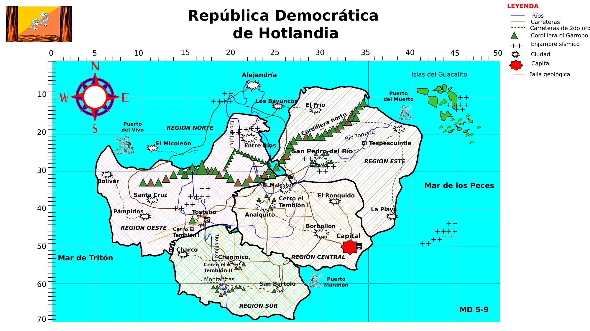

🗺️ República Democrática de Hotlandia — Daños a Infraestructura · Sismo M 7.8
Fuentes: MD-5-2 al MD-6-14 · Última actualización: 18:00 hrs 30 de abril
MD 5-9
📋 Capas de información
🏛️
Edificios
🛣️
Vías
💧
Servicios
⚠️
Prioridades
🆕
EF Nuevo
Todos
🏥 Salud
🏛️ Públicos
🔴 Colapsados
Todos
🛣️ Vías
✈️ Aero
⚓ Puertos
Todos
💧 Agua
⚡ Energía
📡 Telecom
Todas
🔴 Críticas
🟠 Altas
Todos
🆕 Nuevas
🔄 Actualiz.

Estado
Colapsado / Bloqueado
Dañado / En riesgo
Saturado / Comprometido
Operativo con daños
Bloqueado / Suspendido
Desconocido
🏥 Salud · 🏛️ Edificio
🛣️ Vía · ✈️ Aero · ⚓ Puerto
💧 Agua · ⚡ Energía · 📡 Telecom
⚠️ Prioridad de acción
🆕 Ciudad nueva (EF)
🔄 Ciudad actualizada (EF)
×